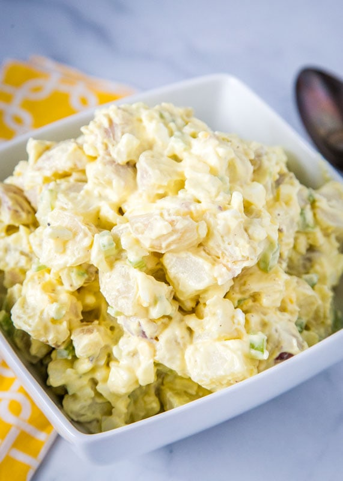

Old Fashioned Potato Salad

Old fashioned potato salad with hard boiled eggs, mayo, mustard and sugar, a traditional and tasty version of the classic American BBQ and potluck staple.
Is there anything more Americana in the summer than good old fashioned potato salad? This is a straightforward classic rendition of this beloved side dish.
Ingredients
- 5 potatoes
- 3 eggs
- 1 cup chopped celery
- ½ cup chopped onion
- ½ cup sweet pickle relish
- ¼ teaspoon garlic salt
- ¼ teaspoon celery salt
- 1 tablespoon prepared mustard
- ground black pepper to taste
- ¼ cup mayonnaise
Directions
- Bring a large pot of salted water to a boil. Add potatoes and cook until tender but still firm, about 15 minutes. Drain, cool, peel and chop.
- Place eggs in a saucepan and cover with cold water. Bring water to a boil; cover, remove from heat, and let eggs stand in hot water for 10 to 12 minutes. Remove from hot water, cool, peel and chop
- In a large bowl, combine the potatoes, eggs, celery, onion, relish, garlic salt, celery salt, mustard, pepper and mayonnaise. Mix together well and refrigerate until chilled.
Enjoy
Return to main page